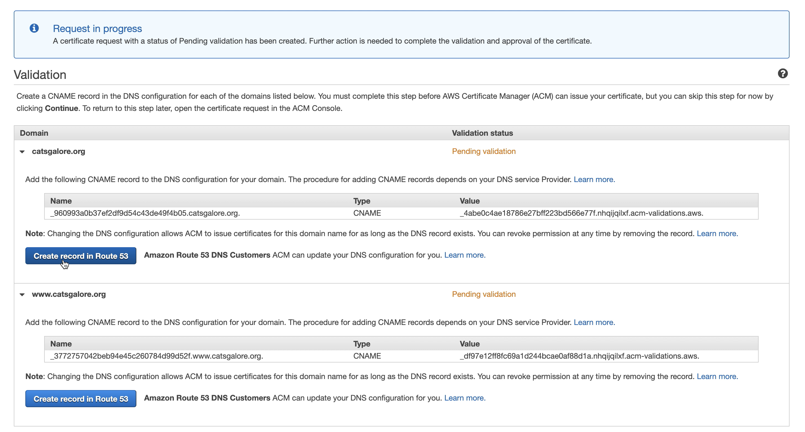

Hosting a site on CloudFront, Amazon's Content Delivery Network (CDN), has a number of advantages over hosting in S3 alone. From a security standpoint, you have built in integration with AWS Shield Standard to protect against DDos attacks, as well as the ability to apply a WAF to your distribution. Through this you can block known malicious requests/IP's. You also gain faster delivery to your users through the use of Amazon's distrubted edge locations. Let's take a look below how to set this up!
Prerequisites
In order to allow users to navigate to a simple URL vs the long and random CloudFront URL, you'll need to have access to a domain within Route 53. For this, you might need to purchase or transfer an exisitng domain to Route 53 - details can be found here. Or if you already own a domain within Route 53 you can create a public hosted zone by following the steps here.
Walkthrough
The first step is to create an S3 bucket to host your sites content. I created a new bucket named "noah-robert-bucket" where I'll place my sites content.
Once this is created, we then need to upload some content for my site. I just have a simple html page that displays "Hello!". I've named this index.html as seen below.
We then navigate to the proporties section and select the 'Static website hosting' section. Select 'Use this bucket to host a website' and then add in your index document (index.html for me).
Once that is done you'll get a new link for your S3 hosted site. Go ahead and select it.
You'll see you instantly get a 403 Forbidden. This is becuase our S3 bucket and associateed objects are not publicly accesible by default. We'll need to make a few changes below to allow us to hit the site.
The first part requires us to navigate to the Block public access section within the Permissions header. In here we'll uncheck the 'Block all public access box' to allow for our bucket to be public. Select save and then confirm the change.
Next we'll need to edit our Bucket policy so that it grants everyone s3:GetObject permission to the objects within our bucket. This will make all of our objects publicy readable.
{
"Version": "2012-10-17",
"Id": "BucketPolicy",
"Statement": [
{
"Sid": "2",
"Effect": "Allow",
"Principal": "*"
"Action": "s3:GetObject",
"Resource": "arn:aws:s3:::noah-robert-bucket/*"
}
]
}
And now we can navigate to our S3 URL and see our newly hosted site
Great! Now we have a static site fully hosted in S3 that users around the world can access. To add greater performance and security benefits, let's set up a CloudFront distributin with our S3 bucket acting as our origin. The first thing we'll do is navigate to the CloudFront section within the console and click the 'Create Distribution' button, and next we'll select the 'Get Started' button under the Web section.
Within our Create Distibution page we have a lot of different options to configure our site. The first thing we need is an Origin Domain Name. This is where we'll point CloudFront to our S3 bucket. Simply select your S3 buckets name from the dropdown. Next we'll select 'Yes' on the Restrict Bucket Access setting. This will open up two more questions where we'll select 'Create a New Identity' and 'Yes, Update Bucket Policy'. What these three settings do is enable our S3 bucket to only be accesbile from our CloudFront distribution and not through our original S3 URL. This will enable us to drop all connections trying to directly hit our S3 url (http://noah-robert-resume.s3-website-us-east-1.amazonaws.com) and not coming through our CloudFront URL. This is done by utilizing an Origin Access Identity that is defined for us. They also automatically updates our S3 bucket policy to include this new policy.

For the 'Default Cache Behavior Settings' section you should change the 'Viewer Protocol Policy' to either enable redirection or use HTTPS only
Scrolling down to the 'Distribution Settings' section, this is where we will enable HTTPS by making use of Amazon's Certificate Manager (ACM). In the 'Alternate Domain Names' section, you can include both the naked and www. version of your site name. Below I have www.catsgalore.org along with catsgalore.org. Next we'll need a certificate to enable HTTPS on our site. Select the 'Request or Import.. ' button to be directed to ACM.
Once there we'll need to add in domain names that correspond with the CNAMEs we just created. Then select Next and choose the defaults for steps two and three. On step four, select 'Confirm and Request'
In step five, we now need to associate this new cert with our hosted zone in Route53. To do this, AWS will utilize DNS validation by creating CNAMEs in our hosted zone on our behalf. Select the "Create record in Route 53' button shown below for both domain names.
When those are confirmed we can navigate back to our Create Distributions page and select our newly created certificate from the dropdown. You'll also want to include the index.html object within the Default Root Object section. Then go ahead and select Create Distibution.
Once the status updates to deployed, which can take around 10 minutes, we can select our new cloudfront link and navigate to our site.
Great - but now we want user to be able to navigate to a simple URL vs the long and random cloudfront one. To do this let's navigate to our Hosted Zones in Route53 and select the domain we want to use. Once in here we are going to create two new A records - one that points to the www. version of the site and one that points to the naked domain. On your hosted zones page, select create record, and then we'll go with a simple routing policy for now
We'll define two simple records below pointed to our CloudFront URL.
For the www. version.
For the naked domain version.
Select create records and then we should then see six total records within out hosted zone. 2 A records, 2 CNAMEs, a SOA, and an NS. Now let's navigate to our domain name at catsgalore.org and make sure we get directed to our S3 site.
Perfect, we now have a static site being served over HTTPS through our CloudFront distribution.
But we still have one more step to fully secure our site. Earlier in this walkthrough we edited our S3 bucket policy to make our objects publicly avialable. In creating our CloudFront distribution we also told AWS to edit our bucket policy with the 'Yes, Update Bucket Policy' selection. So now users can access our site through both our CloudFront distribution and directly from our S3 URL. To correct this, we need to navigate to our bucket policy in S3 and remove the statement that allows access to our bucket directly. Once that's done we should only have a statement similar to below:
{
"Version": "2012-10-17",
"Id": "BucketPolicy",
"Statement": [
{
"Sid": "2",
"Effect": "Allow",
"Principal": {
"AWS": "arn:aws:iam::cloudfront:user/CloudFront Origin Access Identity ##############"
},
"Action": "s3:GetObject",
"Resource": "arn:aws:s3:::noah-robert-bucket/*"
}
]
}
One final note - in order to increase the overall security of your CloudFront site, the link here provides a great walkthrough on utilizng Lambda@Edge to edit your response headers (via the origin response).
As you can see below, we recieve a D- from Mozilla Observatory by deafult. This primarily looks at security related headers (CSP, HSTS, CORS, etc.)
But at least our Qualys scan is good - which primarily looks at our TLS support, cipher suite strength, key exchange, etc.